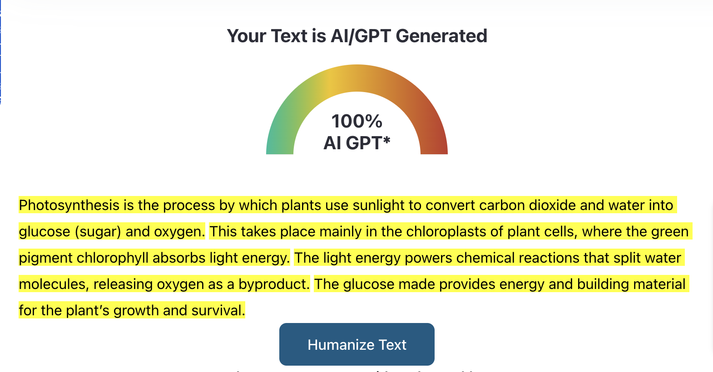
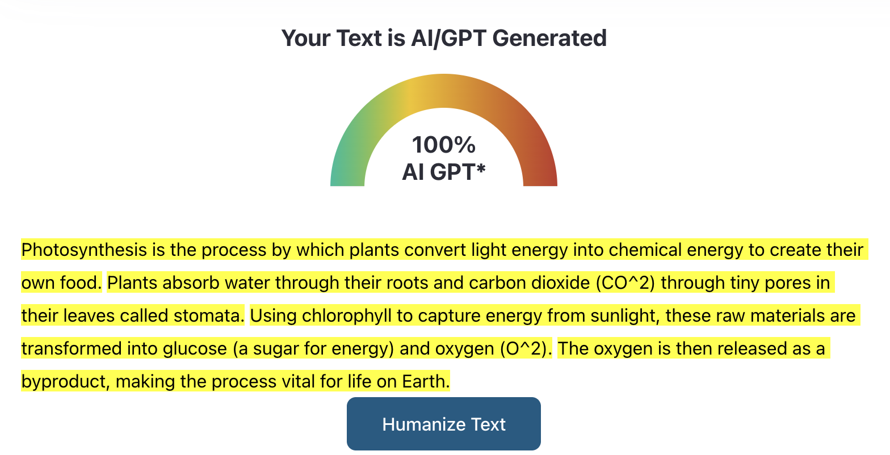
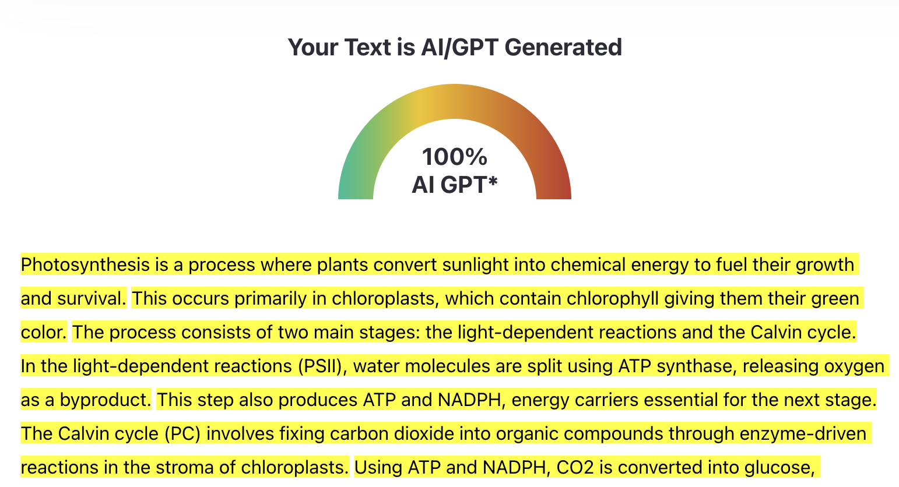
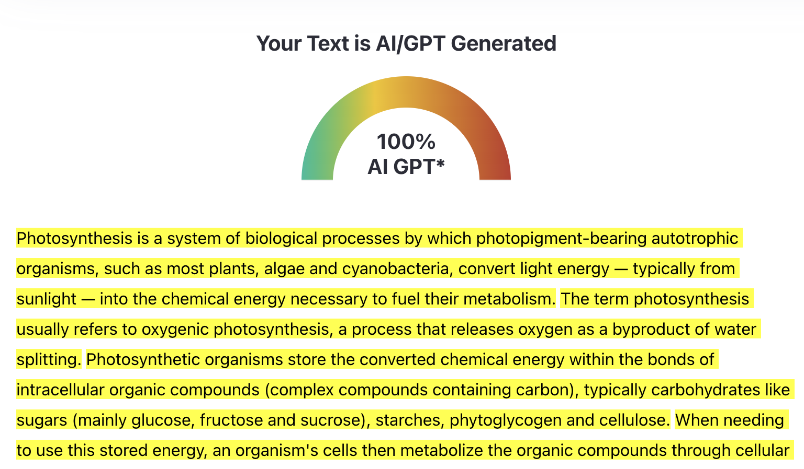
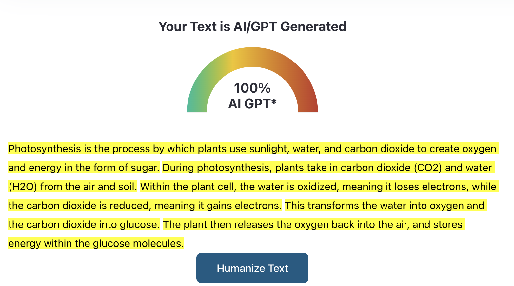
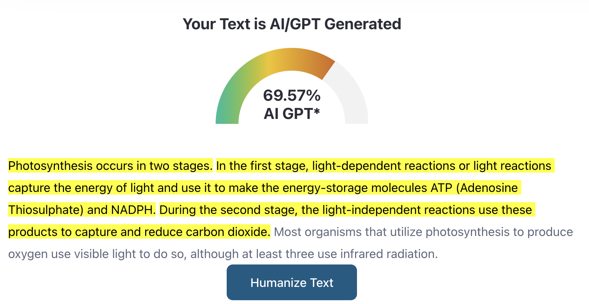

Comparing AI Detection Results on ChatGPT 5.0, Gemini 2.5 Flash, and local DeepSeek-R1-Distill-Qwen-7B.
I gave the 3 models the same prompt: Explain how photosynthesis works in plants (3-5 sentences).
I then used zeroGPT.com to analyze each of their responses. The results were as follows:
ChatGPT 5.0:
Photosynthesis is the process by which plants use sunlight to convert carbon dioxide and water into glucose (sugar) and oxygen. This takes place mainly in the chloroplasts of plant cells, where the green pigment chlorophyll absorbs light energy. The light energy powers chemical reactions that split water molecules, releasing oxygen as a byproduct. The glucose made provides energy and building material for the plant’s growth and survival.AI Detector Result:

Gemini 2.5 Flash:
Photosynthesis is the process by which plants convert light energy into chemical energy to create their own food. Plants absorb water through their roots and carbon dioxide (CO^2) through tiny pores in their leaves called stomata. Using chlorophyll to capture energy from sunlight, these raw materials are transformed into glucose (a sugar for energy) and oxygen (O^2). The oxygen is then released as a byproduct, making the process vital for life on Earth.AI Detector Result:

DeepSeek-R1-Distill-Qwen-7B (did not keep it 3-5 sentences):
Photosynthesis is a process where plants convert sunlight into chemical energy to fuel their growth and survival. This occurs primarily in chloroplasts, which contain chlorophyll giving them their green color. The process consists of two main stages: the light-dependent reactions and the Calvin cycle.
In the light-dependent reactions (PSII), water molecules are split using ATP synthase, releasing oxygen as a byproduct. This step also produces ATP and NADPH, energy carriers essential for the next stage.
The Calvin cycle (PC) involves fixing carbon dioxide into organic compounds through enzyme-driven reactions in the stroma of chloroplasts. Using ATP and NADPH, CO2 is converted into glucose, providing plants with the energy they need to grow and develop. This process ensures that plants can synthesize their own food using sunlight as an energy source.AI Detector Result:

Just by copy and pasting the outputs from the models, the AI detector correctly identified each of the responses as 100% AI generated. However, I wanted to see what it would say about other likely non-AI generated responses. I went to Wikipedia and to National Geographic and copied the first couple lines of the article on photosynthesis. (https://en.wikipedia.org/wiki/Photosynthesis and https://education.nationalgeographic.org/resource/photosynthesis/).
I also went to Quora and grabbed an explanation from 12 years ago (https://www.quora.com/What-is-photosynthesis-and-how-does-it-work).
Wikipedia:
Photosynthesis is a system of biological processes by which photopigment-bearing autotrophic organisms, such as most plants, algae and cyanobacteria, convert light energy — typically from sunlight — into the chemical energy necessary to fuel their metabolism. The term photosynthesis usually refers to oxygenic photosynthesis, a process that releases oxygen as a byproduct of water splitting. Photosynthetic organisms store the converted chemical energy within the bonds of intracellular organic compounds (complex compounds containing carbon), typically carbohydrates like sugars (mainly glucose, fructose and sucrose), starches, phytoglycogen and cellulose. When needing to use this stored energy, an organism's cells then metabolize the organic compounds through cellular respiration.AI Detector Result:

National Geographic:
Photosynthesis is the process by which plants use sunlight, water, and carbon dioxide to create oxygen and energy in the form of sugar. During photosynthesis, plants take in carbon dioxide (CO2) and water (H2O) from the air and soil. Within the plant cell, the water is oxidized, meaning it loses electrons, while the carbon dioxide is reduced, meaning it gains electrons. This transforms the water into oxygen and the carbon dioxide into glucose. The plant then releases the oxygen back into the air, and stores energy within the glucose molecules.AI Detector Result:

Quora:
Photosynthesis occurs in two stages. In the first stage, light-dependent reactions or light reactions capture the energy of light and use it to make the energy-storage molecules ATP (Adenosine Thiosulphate) and NADPH. During the second stage, the light-independent reactions use these products to capture and reduce carbon dioxide. Most organisms that utilize photosynthesis to produce oxygen use visible light to do so, although at least three use infrared radiation.AI Detector Result:

Both of the articles were also classified 100% as AI-generated. I am not convinced that these articles were actually written by AI, but there is potential they were. I am very confident that the Quora answer was not AI generated, given that it was posted 12 years ago, yet the detector found that it was almost 70% AI generated.
Overall, I think this AI detector may be overconfident in its detection of AI vs. Human. In practice, this makes them unreliable for truly distinguishing between human and machine-written content.